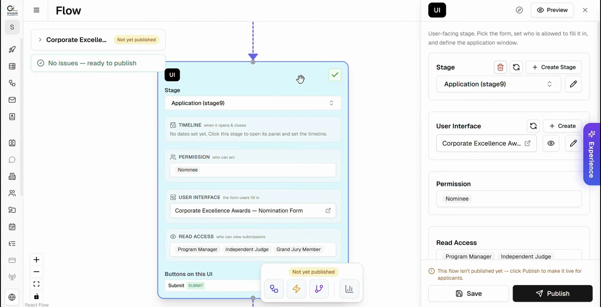

AwardScience.AI-powered platform

An AI-powered platform for building award campaigns. I helped build AwardScience using Node.js and React during my full-stack development internship at KYWH Limited, contributing to development and UI/UX design.
Screenshot from the AwardScience product demo.